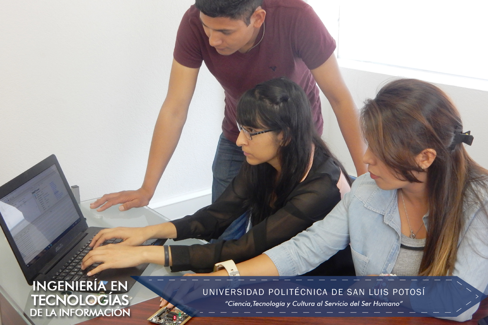

Ingeniería en Tecnologías de la Información

El Ingeniero en Tecnologías de la Información aplica sus sólidos conocimientos al diseño, desarrollo e instrumentación de soluciones informáticas que requieren las organizaciones, atendiendo las necesidades humanas derivadas de la interacción con la computadora. Es competente para mantener equipos de cómputo operando eficientemente y ofrece al usuario soluciones integrales a los problemas asociados con el área computacional.
Los Objetivos del Plan de Estudios de la Ingeniería en Tecnologías de la Información que ofrece la Universidad Politécnica de San Luis Potosí enfatizan siete aspectos importantes en la formación del Ingeniero, que le confieren una sólida preparación para desempeñarse exitosamente en el mundo laboral:
- Adquisición y empleo adecuado de los conocimientos de las Matemáticas y las Ciencias Básicas, como fundamentos para un ejercicio amplio de la profesión
- Manejo diestro de los conocimientos de las tecnologías
- Uso y desarrollo de la tecnología de la información para la innovación
- Aplicación de métodos de investigación para identificar problemas y desarrollar soluciones de manera independiente
- Formación integral con uso adecuado del idioma español, el dominio del idioma inglés, el desarrollo del pensamiento lógico y de habilidades para el autoestudio
- Formación flexible apoyado en un Sistema de Tutorías para el uso eficiente del tiempo y la recuperación del conocimiento adquirido a través de otros medios
- La adquisición de bases teóricas para continuar con estudios de postgrado.
Mision del programa
“El Programa Educativo de la carrera de Ingeniería en Tecnologías de la Información está comprometido con la excelencia en la formación integral y humana, y con el aprendizaje, el desarrollo y aplicación del conocimiento en los campos de desarrollo e implementación de software, ofreciendo una solución integral a los problemas asociados con el área computacional. Está comprometido con la sociedad para mantener una oferta educativa pertinente en el área y desarrollar investigación aplicada involucrando alumnos en la solución de problemas tecnológicos de la sociedad. “
Plan de Estudios
Consulta el Plan de Estudios
Certificaciones:
- Oracle:
- Oracle Certified Associate, MySQL 5
- Oracle Certified Professional, MySQL 5.6 Developer
- Oracle Certified Associate, Java SE 5/SE 6
- Oracle Certified Professional, Java SE 6 Programmer
- Oracle Certified Associate, Java SE 7 Programmer
- Oracle Certified Associate, Oracle Solaris 10 Operating System
- Oracle Certified Professional, Oracle Solaris 10 System Administrator
- Oracle Certified Associate, Oracle Solaris 11 System Administrator
- Cisco:
- Cisco Certified Entry Networking Technician (CCENT)
- Cisco Certified Network Associate (CCNA)
- Microsoft Technology Associate: Database Fundamentals
- Microsoft:
- Microsoft Office Specialist: Microsoft Office Word 2013
- Microsoft Office Specialist: Microsoft Office PowerPoint 2013
- Microsoft Office Specialist: Microsoft Office Excel 2013
Logros / Distinciones
- Mejor Academia a nivel Latinoamérica que promueve la certificación, el programa Cisco Networking Academy Program y que forma nuevos estudiantes en el área de TI
- 3 medallas a estudiantes ejemplares otorgadas por la asociación Trayectoria de Éxito.
- 1er, 6º, 5º lugar concurso Netriders México, 2009, 2011 y 2013.
- 1er lugar expo ciencias otorgada por la Red Nacional de Actividades Juveniles en Ciencia y Tecnología, 2012 y 2013.
- 5º y 6º lugar en el Torneo Mexicano de Robótica, 2016.
- 150+ Certificaciones CCNA y CCENT como Academia CCNA
- 480+ Certificaciones JAVA y Solaris como Academia Oracle.